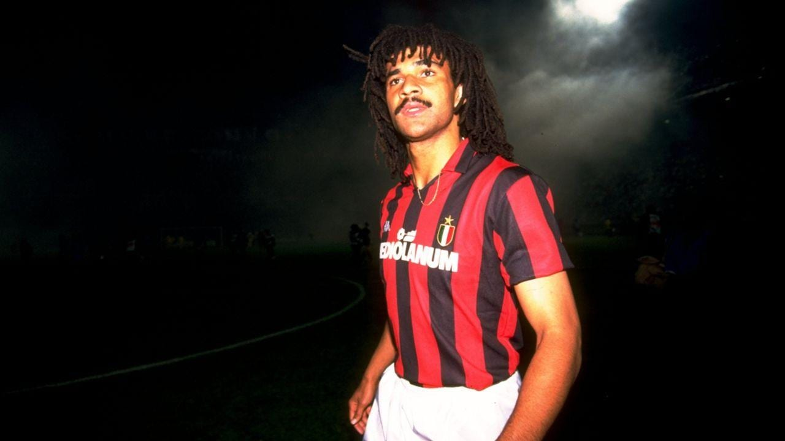

Midfielder
Captain Dreadlocks
Gullit is the ultimate box-to-box Icon. He can play anywhere in midfield or even striker thanks to his all-round stats and physical presence.
Premium price on the transfer market.